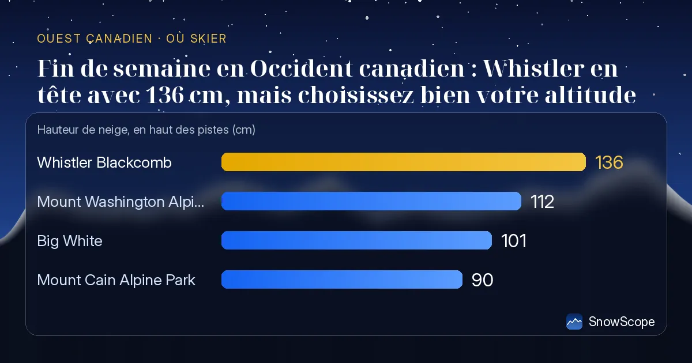
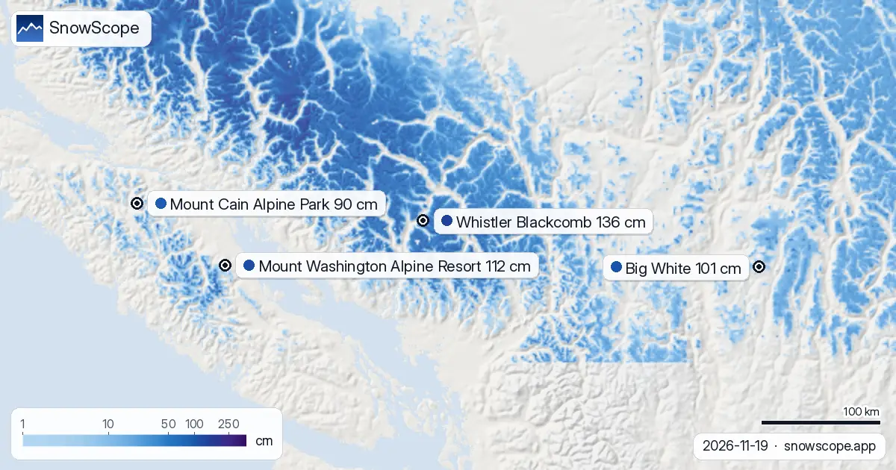

Fin de semaine en Occident canadien : Whistler en tête avec 136 cm, mais choisissez bien votre altitude
Whistler Blackcomb domine le classement des chutes de neige en Ouest canadien cette fin de semaine avec 136 cm en versants supérieurs, bien devant Mount Washington Alpine Resort qui affiche 112 cm. Cependant, la situation change en perdant de l'altitude : l'épaisseur de neige chute rapidement sous 1500 m dans tous les grands domaines, planifiez donc vos descentes avec soin.
Consultez les prévisions neige en temps réel pour Whistler Blackcomb sur l'application SnowScopeHauteurs de neige, alertes poudreuse et carte 3D, gratuitement.
Les versants supérieurs conservent la neige
Whistler Blackcomb domine la région avec 136 cm en versants supérieurs aujourd'hui. Mount Washington Alpine Resort atteint 112 cm en versants supérieurs, tandis que Big White et Mount Cain Alpine Park conservent respectivement 101 cm et 90 cm. Les quatre domaines affichent une neige skiable à leurs sommets, donc si vous pouvez accéder à des versants élevés, vous trouverez une épaisseur correcte.
La différence d'altitude a beaucoup d'importance en début de saison. Big White culmine le plus haut globalement (sommet à 2271 m, base à 1512 m), sa neige bénéficie donc d'un air plus froid. Le sommet de Whistler Blackcomb atteint 2259 m. À ces altitudes, le manteau neigeux est plus compact et stable qu'en bas.
| Station | Hauteur de neige | Neige fraîche, 72 h | Attendu, jours suivants | Sommet |
|---|---|---|---|---|
| Whistler Blackcomb | 136 cm | 0 cm | 0 cm | 2 259 m |
| Mount Washington Alpine Resort | 112 cm | 1 cm | 1 cm | 1 569 m |
| Big White | 101 cm | 0 cm | 0 cm | 2 271 m |
| Mount Cain Alpine Park | 90 cm | 0 cm | 0 cm | 1 616 m |

La chute critique sous 1500 mètres
C'est là que réside le défi de cette fin de semaine. À 1456 m sur Whistler Blackcomb, l'épaisseur tombe à 49 cm. Big White à mi-altitude (1891 m) n'affiche que 12 cm. Les altitudes de base dans la région (653 à 1512 m) sont à peine couvertes ou dénudées : la base de Whistler Blackcomb affiche 0 cm. C'est normal mi-novembre en montagne, mais cela limite les pistes que vous pouvez dévaler en toute sécurité.
Une couverture mince signifie que des rochers ou des souches peuvent se trouver juste sous la surface. La neige de début de saison n'a pas eu le temps de se souder, les versants inférieurs sont donc risqués même s'ils paraissent blancs de loin. Si votre domaine ouvre des pistes sous 1500 m, restez sur les pistes damées uniquement.
Température et exposition des versants cette fin de semaine
Le niveau de congélation samedi passera de 660 m le matin à 920 m l'après-midi, les versants inférieurs se réchaufferont et se ramoliront donc au fil de la journée. Vos descentes matinales seront plus compactes ; les descentes de l'après-midi sur versants exposés au sud seront souvent molles ou révéleront plus de rochers.
Les versants exposés au nord à toute altitude conservent la neige le plus longtemps car ils évitent le soleil direct. Si votre domaine dispose d'un versant nord à 1800 m ou plus, c'est là que vous trouverez le ski le plus stable samedi et dimanche. Les versants sud à altitudes similaires seront plus mous et plus variables.
Pas de neige fraîche prévue ; un changement arrive plus tard
Aucune neige fraîche n'arrive vendredi, samedi ou dimanche en Ouest canadien. Vous explorez ce qui est tombé lors de tempêtes antérieures. Samedi semble plus sec qu'aujourd'hui, dimanche suit le même schéma. Cependant, les perspectives à sept jours suggèrent qu'un changement arrive : Whistler Blackcomb pourrait recevoir 20 cm d'ici jeudi prochain au sommet, et Mount Washington Alpine Resort affiche jusqu'à 37 cm possible au cours de la prochaine semaine.
Cette fin de semaine est un temps d'attente. La semaine prochaine devrait apporter plus de neige, mais pour les trois prochains jours, les conditions resteront stables et froides plutôt que fraîches.
Comment cette fin de semaine se compare aux saisons passées
À mi-altitude sur Whistler Blackcomb (1456 m), l'épaisseur de neige aujourd'hui se situe sous tous les 46 ans précédents à cette date ; normalement vous verriez 113 cm à cette altitude le 19 novembre. Big White à mi-hauteur (1891 m) est plus profond que lors de 33 de ces 46 années passées, donc il se porte mieux. Mount Cain Alpine Park se situe plus profond que lors de 19 de ces 46 années passées à hauteur similaire.
La région dans son ensemble fonctionne en retard par rapport à sa situation habituelle à mi-novembre, mais la tendance est à la hausse. La neige de début novembre est fragile ; la région a gagné 33 000 km² de couverture neigeuse en deux jours (du 17 au 19 novembre), donc plus de terrain devient skiable semaine après semaine.
Avant de partir : statut des remontées et sécurité
Consultez le site web du domaine avant de prendre la route : toutes les remontées n'ouvrent pas en novembre, et certains versants élevés pourraient encore être fermés. Whistler Blackcomb, avec la couverture de début de saison la plus profonde, est votre meilleure option si vous cherchez un ski fiable. Mount Washington Alpine Resort offre une option plus tranquille à profondeur similaire.
Si vous envisagez du ski hors-piste, lisez d'abord le bulletin officiel d'avalanches. Le manteau neigeux de début de saison est fragile et change rapidement avec les variations de température. Restez sur les pistes damées sauf si les conditions sont confirmées sûres par votre service d'avalanches local.
Conseils aux skieurs
- Skiez au-dessus de 1800 m cette fin de semaine : l'épaisseur de neige chute rapidement sous cette altitude dans tous les domaines, et la couverture mince cache les rochers.
- Choisissez des versants exposés au nord où la neige dure le plus longtemps, surtout à mi-altitudes. Les versants sud se ramoliront l'après-midi.
- Skiez tôt dans la journée sur les versants inférieurs si vous y allez : le niveau de congélation monte samedi matin, les descentes de l'après-midi seront donc plus molles ou plus variables.
- Consultez le site web du domaine pour le statut des remontées avant de prendre la route ; tout le terrain n'ouvre pas en novembre.
- Avant de skier hors-piste, lisez le bulletin officiel d'avalanches. La neige de début de saison est instable et se soude mal à ce qui se trouve dessous.
À propos de ces chiffres
Les hauteurs de neige des stations sont la neige la plus épaisse sur le haut du domaine à la date indiquée ; ce sont des estimations pour une zone, pas une mesure en un point. Les prévisions peuvent changer. Consultez toujours le bulletin d'avalanche officiel avant le hors-piste.
Bulletins d'avalanche officiels: Avalanche Canada
Citer ce bulletin
Pour la recherche, l'enseignement ou la presse : chiffres et graphiques réutilisables librement sous CC BY 4.0 avec cette citation.
SnowScope (2026), Fin de semaine en Occident canadien : Whistler en tête avec 136 cm, mais choisissez bien votre altitude, https://snowscope.app/blog/fr/2026/11/western-canada-where-to-ski-this-weekend-19-november-2026.html, consulté le 2026-11-19
SnowScope (Atlas Labs). (2026, November 19). Fin de semaine en Occident canadien : Whistler en tête avec 136 cm, mais choisissez bien votre altitude. SnowScope snow reports. https://snowscope.app/blog/fr/2026/11/western-canada-where-to-ski-this-weekend-19-november-2026.html
BibTeX
@misc{snowscope2026westerncanadawheretoskit,
author = {{SnowScope (Atlas Labs)}},
title = {Fin de semaine en Occident canadien : Whistler en tête avec 136 cm, mais choisissez bien votre altitude},
year = {2026},
month = nov,
howpublished = {\url{https://snowscope.app/blog/fr/2026/11/western-canada-where-to-ski-this-weekend-19-november-2026.html}},
note = {Published 2026-11-19 16:09 UTC; accessed 2026-11-19}
}· CC BY 4.0 · Méthodes, données et outils →
Whistler Blackcomb : neige et température selon l'altitude, cet hiver vs l'hiver dernier (outils) →
Suivre Whistler Blackcomb
Gratuit : un message quand la neige arrive, et la météo chaque matin.
Autres bulletins neige

À Big White le 15 novembre, les pentes supérieures retiennent 68 cm près du sommet tandis que la base reste dégagée ; un gradient vertical extrême typique du début de saison.

Whistler Blackcomb affiche 116 cm sur les pentes supérieures au 12 novembre, avec 83 cm prévus au cours des trois prochains jours. Mount Washington Alpine Resort domine la région avec 162 cm.

SnowScope classe Whistler Blackcomb premier dans l'Ouest canadien aujourd'hui, avec environ 153 cm sur le haut du domaine, devant Big White …